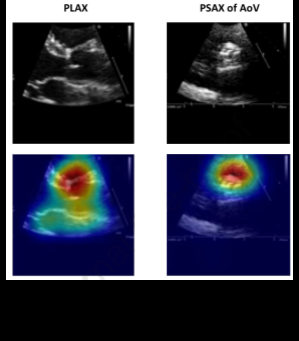
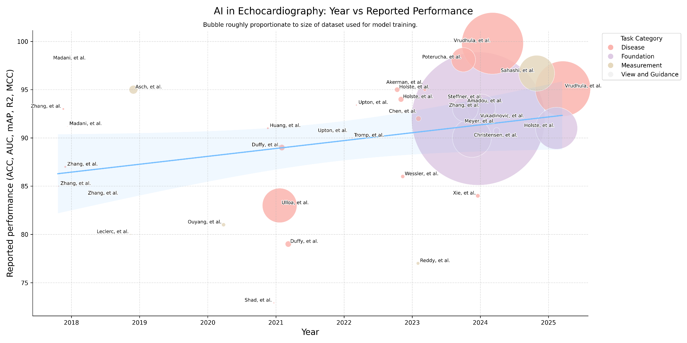
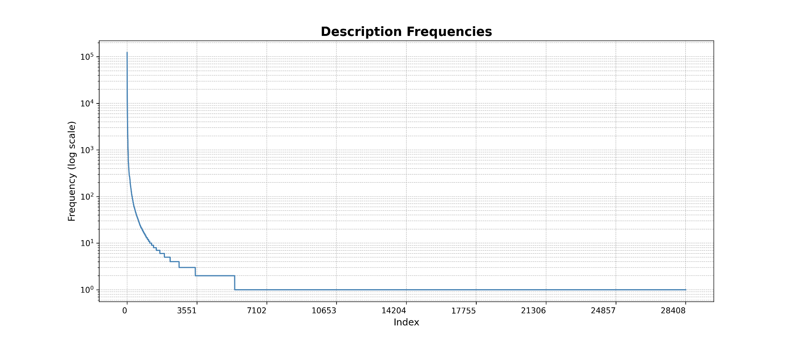

Background
Echocardiography is fundamental in the assessment of cardiovascular disorders and represents one of the most ubiquitous imaging modalities in medicine.1 Nearly every person in the Western world will undergo an echocardiographic examination at least once in their lifetime, and elderly persons may receive an echocardiogram one or more times per year.2 More than 30 million echocardiograms are performed each year in the United States.3,4 Since its assimilation into clinical medicine, the search term "echocardiography" yields over 200,000 articles on PubMed. Dr. Inge Edler performed the first cardiac ultrasound in Lund, Sweden in 1953, but the first formal systemization of the echocardiogram is credited to Dr. Harvey Feigenbaum, who founded the American Society of Echocardiography (ASE) in 1975. At the time of writing, we celebrate its semicentennial — ushering echocardiography's next era: artificial intelligence.
Over the past half-century, echocardiography has been in a continual state of maturation and evolution. Integrating 2D imaging, Doppler signaling, and 3D and 4D capabilities, these modalities allow the echocardiogram to encompass visualization of tissue morphology, muscle motion, and blood flow. The report includes descriptors that focus foremostly on four chambers, four valves, and four other structures: the pericardium, aortic root, aortic arch, and pulmonary artery. Given this standardization — both in terms of imaging formats and reporting expectations — interpretation of echocardiography is a contained problem, making it particularly well-suited to automation with artificial intelligence.5,6,7
Yet, for all the expectation around AI in echocardiography, the topic receives only a brief acknowledgement, as an excerpt before the conclusion, in the latest ASE guidelines.6 Outpacing guidelines, however, the challenge of automating echocardiographic interpretation has gained popularity among academics across the globe.8 Publications addressing automated assessment of cardiac function, 2D measurements, disease detection, and, finally, full report generation point to a clear ambition: the automated echocardiographic report.
We foresee progress in automated echocardiographic evaluation following the evolution of the electrocardiogram (ECG), which has benefited greatly from automated interpretation. Automated ECG interpretation by computer began in the 1960s, and today tens of millions of ECGs are interpreted by machine.9,10,11 The aim of the field of AI in echocardiography is to fully automate the creation of the echocardiographic report — eventually to challenge the necessity or efficacy of human interpretation. Amplifying this mission, the nationwide availability of expertise required to interpret echocardiograms has been in decline, with a -0.4% increase in cardiologists between the years 2016 and 2021.12 Moreover, a severe sonographer shortage required to meet imaging demand across the country is growing.13 A solution to reduce the delays and variability in echocardiography is needed to address the surplus of mortality linked to cardiovascular disease.14,15 Accordingly, automated echocardiographic reporting is regarded as a necessary evolution.
Search strategy and selection criteria
We searched PubMed between January 1, 2018 and September 29, 2025 using free-text terms and author linkage. Search terms focused on the application of AI in echocardiography and ultrasound — for example, "artificial intelligence in echocardiography," "deep learning AND," "machine learning AND," "echocardiographic view classification," "aortic stenosis," "mitral regurgitation," "PAH," "LVH," "HCM," "EF," and "LV dysfunction." We searched conference abstracts from the American Society of Echocardiography, European Society of Echocardiography, and the American College of Cardiology, as well as FDA filings related to SaMD for AI applications in echocardiography. Preference was given to articles with robust citations, transparency around training datasets used, and general acceptance in the field. Only English-language publications were considered.
History of applying computer interpretation to echocardiography
Speckle tracking for assessment of impaired myocardial segments was first published in 1995 and represents one of the early approaches taking advantage of temporal cinegraphic information inherent in echocardiography.16 Over the past three decades, computer-vision methods have steadily evolved in parallel with advances in computational capacity and algorithmic design.
The trajectory of deep learning in this field has followed a predictable but accelerating arc: beginning with 2D segmentation- and classification-driven CNNs (especially UNet- and VGG-backboned models) in 2018–2019; evolving into spatiotemporal 3D CNNs and residual networks (R3D, DeepSenseV3) during 2020–2021 to explicitly model motion and cine loops; proceeding through a hybridization phase around 2022–2023 where CNNs, 3D variants, UNet-style decoders, and rudimentary transformer elements coexisted; and finally arriving in 2024–2025 at the "transformer era," where ViTs, R(2+1)D, SAM, hybrid CNN-Transformer models, diffusion-augmented UNets, and task-specific segmentation architectures dominate research.17,18
Challenges in applying AI to echocardiography
Despite its widespread use, ultrasound is both literally and statistically noisy, with the interpretation of echocardiography often suffering from poor inter-rater reliability, as reflected in low kappa agreements.19,20 Unlike other radiological modalities, echocardiography is characterized by cone-shaped ultrasound beams in which spatial resolution is highest proximally but declines distally. Echocardiography is also cinegraphic, requiring analysis of temporal dynamics that are less relevant to static modalities such as CT or radiography.
Cardiac motion introduces further complexity: the heart contracts in a three-dimensional helical pattern, causing anatomy to shift within the field of view. Valve leaflets coapt, myocardial segments stretch and contract, chamber sizes oscillate, and blood movement varies dynamically — particularly in the setting of disease. Algorithms designed to consider these changes may struggle in the setting of cardiac arrhythmias, where cardiac cycles are less predictable. Congenital anomalies, tumors, thrombi, rare cardiac diseases, and prostheses pose another difficulty, and speak to the long-tail statistical distribution challenge for algorithmic generalization. Training on simulated and synthetic data is a proposed direction.21
Regulatory and reimbursement
Despite echocardiography's worldwide ubiquity, algorithms for automated assessment of echocardiography represent less than 2% of Software as a Medical Device (SaMD)–regulated devices for automated radiological interpretation.22 Public FDA records stretch as early as DiaCardio's "Dia-Analysis," a precursor to Philips QLAB cardiac quantification plug-in (K070792), cleared in 2007, and DiaCardio's LVivo EF software (K130779), cleared via 510(k) in 2013.
Modern challenges include difficulties aligning adaptive or continuously learning algorithms with FDA's traditional static "locked model" clearance paradigm;23 ambiguity in how to satisfy "substantial equivalence" or predicate device requirements when newer models diverge substantially in architecture or training data;24 the need for transparency, risk management, and explainability under the latest proposed FDA frameworks;25 and limited consistency and reporting in FDA summaries about how AI aspects were validated.26
Despite these regulatory challenges, automated interpretation of echocardiography has been embraced within public reimbursement frameworks. In 2021, CPT code 93356 was introduced to reimburse quantitative assessment of myocardial strain imaging — the first major inclusion of an automated image-analysis technique within echocardiography's procedural lexicon. In 2025, the AMA approved Category III CPT code 0932T for automated detection of restrictive cardiomyopathy within echocardiography. Development of future codes to cover broader AI reporting, such as reimbursement for an entire echocardiographic report, is an ongoing discussion.27
Trends of applying AI to the modalities of echocardiography
Coinciding with innovations in deep learning and its applications in adjacent fields of medical imaging,28,29,30 deep learning applied to echocardiography has seen rapid progress. Echocardiography is unique among other radiological modalities for its multimodal nature: 1D + time (M-mode, CW-Doppler, PW-Doppler, tissue Doppler); 2D still frames; 2D + time (B-mode); and 2D + time integrating color Doppler representing blood flow direction, velocity, eccentricity, and distance (C-mode).
Given the plurality of interpretation challenges and opportunities, the trajectory of these applications mirrors the scaling laws of deep learning itself: tasks requiring limited data and modest computational resources were addressed earliest, whereas complex problems demanding large-scale datasets and high-performance GPUs have only recently become tractable.
Steps to automate the echocardiographic report
Echocardiographic images are obtained by placing an ultrasound probe at various positions on the thoracic cavity and tilting or rotating the transducer axially about the cardiac chamber.31 In the United States, echocardiograms are reviewed by two clinicians: first the ultrasound technician, who may be tasked with creating initial measurements, and then the physician qualified to produce an echocardiographic report. Finalizing the report incorporates a multitude of quantitative parameters, independent descriptors of cardiac anatomy, and a report summary.
We consider the steps to automate the echocardiographic report to begin after the image acquisition phase, and thus firstly must address view classification. This informs spatial and anatomical context for measurements and other qualitative assessments. Proceeding, we then automate quantitative and qualitative assessment. Calculation-derived parameters and measurement-directed disease guidelines can also be referenced. Taken together, these outputs would be used to produce the report verbiage.
View classification & guidance
Classification of echocardiographic views is a foundational task, essential for nearly all downstream deep-learning applications. Large-scale datasets needed for disease-detection models require tens of thousands of consistently labeled views — an effort impractical to perform manually and thus dependent on machine-generated labels. Because view taxonomy is at the core of echocardiography, the problem is both well-suited to classification with deep learning, and models are transferable across datasets, institutions, and downstream tasks.32
The challenge of view classification benefits from the data availability of the standard echocardiogram, which consists of 40–60 DICOMs many of which are cinegraphic — containing collectively thousands of frames. Owing to the low signal-to-noise ratio inherent in echocardiographic imaging, each frame of a cine is visually distinct, so labeling a single cine propagates labels to hundreds of frames.34,35
Diving further into view classification, scientific guidelines are decisive in establishing the optimal echocardiographic views to assess pathology. Certain deep-learning studies have revealed, however, that alternative views may be more informative. Take for instance Vukadinovic and colleagues' findings that in a view-informed attention network, image factors that are beyond those known in disease guidelines are considered.51 Morphological factors considered by "black-box" deep-learning models elude researchers and are an active area of investigation, though methods like Grad-CAM visualizations may provide insight into the features models appraise toward their classification.

Automated echocardiogram view-guidance systems use deep-learning–based feedback to direct probe orientation toward standardized views, reducing operator variability and improving image quality. Early studies show these systems enable novices to acquire diagnostic-quality images, highlighting their potential to expand echocardiography use in point-of-care and resource-limited settings.36
Measurements
Proceeding from view classification, quantitative measurement represents the rudimentary function of echocardiographic assessment. Measurements are performed manually and involve linear and area measurements by hand-drawn placement of calipers or hand-planimetry by visual estimation. As a result of human dependence, echocardiographic measurements are variable, time-consuming, and have poor reproducibility.37,38
But measurement variability plagues even the most reputable institutions. In an analysis of 24,948 paired follow-up studies performed at Stanford University and interpreted by board-certified, level-III echocardiographers — each designated in the report as showing "no significant change" — Pillai and colleagues documented systematic variability defined as coefficient of variation (CV): linear measurements exhibited the greatest precision (median CV ~3–5%), variability increased in area-derived measures (~8–12%) and calculated indices (~12–20%), and reached its highest magnitude in Doppler-derived parameters, which frequently exceeded 20–30% CV.41
Studies assessing intraclass correlation coefficients (ICCs) have demonstrated that AI-derived echocardiographic measurements consistently exhibit higher reproducibility than human readers. In particular, when comparing the agreement between AI and a group of humans, the variability is often lower than the variability observed between human readers.49,50 This reliability of AI systems to produce stabilized measurements can reduce interobserver variability — particularly on follow-on longitudinal studies — and as such may pave an avenue for an AI core laboratory, where precision is paramount.
Disease detection
The advantages of deep learning over manual interpretation of echocardiography are most compelling in the setting of evaluation of disease. Deep learning offers an opportunity to learn from image factors that are beyond those known in disease guidelines.51
Pathological signatures are visually distinct in echocardiography and thus well-suited for automated recognition: myocardial tissue impacted by fibrosis and infiltrative amyloid fibril deposition, both often presenting with left-ventricular hypertrophy, appears echogenic relative to healthy myocardium; calcification of valvular leaflets implicated in restrictive valvular motion, valvular sclerosis, and stenosis appears distinctly echogenic; and, because each red blood cell is a specular reflector, C-mode color Doppler appears dense in the setting of valvular regurgitation.
In the modern era of deep learning, the use of increasingly large datasets has driven a clear trend toward improved performance and robustness in disease-detection models, with AUC reported for detection of clinically significant versus non-significant mitral regurgitation approaching its upper theoretical asymptote. For instance, Vrudhula et al. demonstrated a model trained in excess of 2.5 million DICOMs showed AUCs of 0.998.52 The function of disease-classification models has been overwhelmingly toward binary classification of disease, and deep-learning models demonstrated to stratify disease severity reveal the challenge implicit in the intersubjective nature of echocardiographic interpretation.53,54
Foundation models towards generation of the full echo report
As we progress from view classification, measurement, and disease detection, we move to the foundation model. Over the past decade, studies have explored these expert tasks; however, these image-processing algorithms — while precise in their narrow focus — fall short in mirroring the holistic and interconnected clinical judgment typical of human echocardiographers in producing a full qualitative echocardiographic report.
Vision-language models are a fundamental advance in the field of deep learning with implications for a host of applications in medical imaging. They promise to encapsulate not just discrete data points typical in traditional machine learning, but also the complex contextual interrelations in clinical diagnosis. Foundation models portend several advantages: they can be trained on large, unlabeled datasets; they can be multi-modal, accepting as input still-frame and cines, exploiting the temporal information embedded between interconnected frames; and they can be trained to consider the plethora of modalities inherent in echocardiography. Concepts exploiting this phenomenon have been demonstrated, with several foundation models published over the past year.55,56,57,58 Concepts of the foundation model in echocardiography point not only to increased performance for discrete measurement and regression tasks, disease classification, and severity stratification, but towards a productive step in the creation of the full report. It remains to be seen which pipeline architecture will yield a fully automated echocardiographic report that is accepted into clinical practice, though a qualitative trend suggests the field is moving towards solving an automated report.

Language of the echocardiographic report
Despite efforts to ground many aspects of echocardiographic interpretation in quantifiable endpoints, language is ultimately the medium of echocardiographic reporting. Guidelines have been published around the recommended components of an echocardiographic structured report, though — in the context of language-embedding models — these guidelines also serve a serendipitous secondary purpose of constraining the language diversity used in report text.6,7
For all the focus of language in qualitative interpretation of echocardiographic reporting, peer-reviewed literature exploring metalinguistic trends of structured reports is sparse. Vukadinovic and colleagues report among 275,442 studies from Cedars-Sinai Medical Center, 67,756,876 words are present, and from the same group, Christensen et al. developed a custom domain-specific echocardiography text tokenizer to standardize heterogeneity across reporting language.59
Exploring this concept, we analyzed a subset of data sources from a national ultrasound-diagnostic company collected between 2009 and 2024 containing 82,456 TTE studies, approximating 870,000 descriptors of chambers, valves, and other structures. We indexed each descriptor by the instances it appears and enumerated unique descriptors.

Language remains the fundamental expression of echocardiographic interpretation, capturing subtleties both explicit and implied. Ultimately, the fully automated echocardiographic report will require not only accurate visual and quantitative inference, but also a mechanism developed on account of great exploration into the lexical diversity and structure of the echocardiographic language. Satisfactorily accomplishing this would result in encoding the latent semantics of diagnostic phrasing, which contains the gradations of certainty, emphasis, and relational context of echocardiographic report language.
Use of major windows to reduce the complexity of echocardiography
It is interesting to note the focus on the use of major echocardiographic views for many of the deep-learning studies reviewed here. As disease can be classified with lower-order information, this points to the potential of a future of a simplified echocardiogram, where the diagnostic information required to assess the complete echocardiogram may be available in a simpler examination.60 A suite of algorithms focused entirely on automated interpretation of PLAX may be feasible for production of a preliminary left-sided echocardiographic report,61 and may offer a critical avenue in the utility of portable Point-of-Care (POCUS) hardware.
Evangelos and colleagues showed an AI model can capture HCM and ATTR amyloidosis from simplified echocardiographic examinations (PLAX, PSAX, A4C views only) taken in the emergency setting, demonstrating feasibility in capturing diagnoses of non-acute cardiomyopathies from POCUS examinations which would otherwise be relegated to more comprehensive TTE examinations.62 Emerging studies point to the direction of predicting cardiac magnetic resonance (CMR)–derived findings from echocardiographic images.63
Clinical trials of AI echocardiography
Formal clinical trials evaluating AI in production are emerging. Early clinical trials demonstrated feasibility in image-acquisition tasks, concluding minimally trained operators guided by AI produced significantly more adequate standard views. A randomized trial by Narang et al. (Nature, 2023) showed that AI-derived ejection-fraction estimates were non-inferior to sonographer measurements, supporting integration of automation into quantification workflows. Building on these findings, ongoing studies are expanding into broader clinical contexts: NCT05558605 is assessing AI guidance during routine patient care, NCT07144189 is applying AI to the diagnostic challenge of low-gradient aortic stenosis, and the AI-ECHO/ACCEL Lite crossover trial is evaluating workflow efficiency, reproducibility, and interpretation time. Collectively, completed studies confirm that AI can enhance acquisition and quantification, while ongoing trials aim to validate its impact on clinical care and laboratory operations.
| Identifier / Trial | Aim | Status |
|---|---|---|
| NCT03936413 — Artificial Intelligence in Echocardiography | Determine whether a Bay Labs AI system can be used by minimally trained operators to obtain diagnostic echo images. | Registered clinical trial |
| NCT05558605 — AI-Guided Echocardiography to Triage / Manage Patients | Test AI-based echo guidance in patients with known or suspected heart disease. | Ongoing trial |
| NCT07144189 — AI Assessment of Low-Gradient Aortic Stenosis Severity | Evaluate AI methods for grading aortic-stenosis severity in low-gradient cases. | Registered (echo / valve disease) |
| AI-ECHO / ACCEL Lite — randomized crossover trial | Evaluate how AI-based automated echo measurements affect sonographer workflow, time, and quality. | Reported / ongoing |
| Sonographer vs AI for LVEF — blinded randomized trial | Compare initial LVEF measurement by AI vs sonographers and effect on final cardiologist interpretation. | Completed, published in Nature |
| AI-based Automated Echocardiography (preprint / trial) | Integrate AI into real clinical echo workflows to evaluate performance and outcomes. | Preprint / ongoing |
| Novice users acquiring echo with AI guidance | Assess whether nurses without echo experience can acquire diagnostic images with AI assistance. | Prospective evaluation |
Commercial offerings
Growing market expectation for AI integration into clinical workflows has spurred the emergence of startups seeking to capture its potential value. These efforts span the entire imaging continuum, from acquisition to interpretation. Startups and academic groups represent efforts from the United States, the United Kingdom, Singapore, Israel, Lithuania, France, China, and the United Arab Emirates — reflecting a worldwide "space race" toward automated echocardiography.
| Software | Company | Country | Functions |
|---|---|---|---|
| Probe guidance | |||
| Vscan Air SL w/ Caption AI | GE | USA | Probe placement assistance |
| UltraSight AI Guidance | UltraSight | Israel | Probe placement assistance |
| HeartFocus | DESKi | France | Probe placement assistance |
| Interpretation | |||
| Libby Echo:Prio | DyadMed | USA | EF — company defunct |
| LVivo EF | DiaAnalysis | Israel | EF and view classification (acquired by Philips) |
| Philips / Tomtec | Philips | USA | 3D echo, multimodality integration |
| GE EchoPAC | GE | USA | Automated measurements, reporting |
| Imacor | Imacor | USA | Myocardial strain, 3D TEE, hemodynamics — ICU-focused |
| InVision Precision Cardiac Amyloid | InVision Medical | USA | Amyloid detection, EF analysis |
| EchoMeasure | iCardio.ai | USA | View classification, quality, LV/RV/AS measurements |
| EchoApex | Siemens Healthineers | USA | Foundation model — view classification, LV measurements, EF |
| Us2.ai | Us2.ai | Singapore | View classification, quality, chamber, Doppler measurements |
| EchoGo | Ultromics | UK | HFpEF, amyloid, GLS analysis, reporting |
| Ventripoint VMS | Ventripoint | Canada | 2D/3D reconstruction, EF, single ventricle |
| EchoConfidence | MyCardium | UK | View classification, chamber, Doppler measurements |
| EchoNous Kosmos | EchoNous | USA | Real-time labeling, auto measurement (POCUS) |
| Ligence Heart | Ligence | Lithuania | View classification, chamber, Doppler measurements |
| EchoSolv AS | EchoIQ | Australia | Aortic-stenosis detection (valve phenotyping) |
Reported models, 2018–2025 (Table 3)
| Paper | Year | Problem | Target task | Architecture | Perspective | Studies | Videos | Metric | Result |
|---|---|---|---|---|---|---|---|---|---|
| Madani, et al. | 2018 | View and Guidance | View Classification | UNet | View prediction | 267 | — | ACC | 98 |
| Madani, et al. | 2018 | Disease | LVH | UNet | View prediction | 455 | — | ACC | 91.2 |
| Zhang, et al. | 2018 | View and Guidance | View Classification | UNet, VGG13 | A2C, A4C, PLAX, PSAX, A3C | 227 | — | ACC | 84 |
| Zhang, et al. | 2018 | Disease | HCM | UNet, VGG13 | A2C, A4C, PLAX, PSAX, A3C | 2,739 | — | AUC | 93 |
| Zhang, et al. | 2018 | Disease | Amyloid | UNet, VGG13 | A2C, A4C, PLAX, PSAX, A3C | 3,071 | — | AUC | 87 |
| Zhang, et al. | 2018 | Disease | PAH | UNet, VGG13 | A2C, A4C, PLAX, PSAX, A3C | 983 | — | AUC | 85 |
| Leclerc, et al. | 2019 | Measurement | LV Function | UNet | A2C, A4C | 500 | — | MCC | 80 |
| Asch, et al. | 2019 | Measurement | LV Function | CNN | A4C | 50,000 | — | R² | 95 |
| Ouyang, et al. | 2020 | Measurement | LV Function | DeepSenseV3, R3D | A4C | 10,030 | 10,030 | R² | 81 |
| Jafari, et al. | 2020 | Enhancement | — | UNet, CycleGan | A2C | — | — | — | — |
| Wang, et al. | 2021 | Disease | VSD, ASD | — | Pediatric (multiview) | 1,308 | 6,540 | AUC | 94.2 |
| Huang, et al. | 2021 | Disease | Aortic Stenosis | ResNet | PLAX, PSAX | 2,905 | — | AUC | 91 |
| Degerli, et al. | 2021 | Pathology | MI | UNet | A4C | 1,000 | — | — | — |
| Shad, et al. | 2021 | Disease | RV Function | ResNet | A4C | 723 | 1,223 | AUC | 72.9 |
| Ulloa, et al. | 2021 | Mortality | Mortality | — | View agnostic | 34,362 | 812,278 | AUC | 83 |
| Upton, et al. | 2022 | Disease | CAD | UNet | A2C, A3C, A4C | 1,498 | — | AUC | 93.4 |
| Duffy, et al. | 2021 | Disease | Amyloid | R3D | PLAX | 24,804 | — | AUC | 79 |
| Duffy, et al. | 2021 | Disease | HCM | R3D | PLAX | 24,804 | — | AUC | 89 |
| Tromp, et al. | 2022 | Disease | — | CNN | A2C, PLAX, A4C | 602 | — | AUC | — |
| Upton, et al. | 2022 | Disease | — | CNN | A4C | 578 | — | AUC | 90 |
| Tromp, et al. | 2022 | Disease | — | CNN | A2C, PLAX, A4C, 2D other | 1,145 | — | AUC | 90 |
| Wessler, et al. | 2023 | Disease | AS | — | PLAX | 577 | 10,253 | AUC | 86 |
| Akerman, et al. | 2023 | Disease | HFpEF | ResNet | A4C | 6,756 | — | — | — |
| Holste, et al. | 2023 | Disease | AS | R3D | PLAX | 20,500 | 20,500 | AUC | 94 |
| Akerman, et al. | 2023 | Disease | HFpEF / HFrEF | — | A4C | 7,249 | 7,249 | AUC | 95 |
| Holste, et al. | 2023 | Disease | — | — | PLAX | 5,257 | 17,570 | AUC | 95 |
| Chen, et al. | 2023 | Measurement | — | — | A4C, A2C, PW-Doppler Transmitral, CW-Doppler Transtricuspid, Tissue Doppler IVS, Tissue Doppler Lateral Wall | 2,238 | 18,992 | ACC | 92 |
| Reddy, et al. | 2023 | Pediatrics | LV Function | — | A4C, PSAX | 4,467 | 7,643 | R² | 77 |
| Jiang, et al. | 2024 | View and Guidance | View Classification | — | PLAX, PSAX-AV, PSAX-MV | 110 | 151,000 | — | — |
| Alajrami, et al. | 2024 | Segmentation | LV Function | MCD U-Net | A4C | — | — | — | — |
| Steffner, et al. | 2024 | View and Guidance | View Classification | R(2+1)D | TEE (8 views) | 2,967 | 2,967 | AUC | 91.9 |
| Amadou, et al. | 2024 | View and Guidance, Measurement, Disease | View Classification, Segmentation, Pathology, LV Function | — | View agnostic to 18 views | 26,704 | 450,338 | AUC | 93 |
| Zhang, et al. | 2024 | Measurement | LV Function, Measurements | ViT, STFF-Net | View agnostic to 12 views | — | — | — | — |
| Alvén, et al. | 2024 | Measurement | LV Function | I3D | A2C, A3C, A4C, PLAX | — | — | — | — |
| Fadnavis, et al. | 2024 | Disease | PAH | ViT-B/16 | — | 6,500 | 286,080 | AUC | 80 |
| Meyer, et al. | 2024 | Foundation | — | ViT | — | 28,000 | — | mAP | 90.73 |
| Kim, et al. | 2024 | Foundation | — | ViT | A2C, A4C, PLAX, PSAX, "Others" | 6,500 | 286,080 | — | — |
| Vukadinovic, et al. | 2024 | Foundation, View and Guidance, Measurement, Disease, Report Generation | Foundation, View Classification, Out of Domain, Pathology, Report Generation | mViT | View agnostic | 275,442 | 12,124,168 | AUC | 92 |
| Zhang, et al. | 2024 | Foundation | Segmentation | — | A2C, A4C, PLAX, PSAX, others | 7,243 | 525,328 | AUC | 93.1 |
| Ravishankar, et al. | 2023 | Foundation | Segmentation | ViT-B | — | — | — | — | — |
| Christensen, et al. | 2024 | Foundation, View and Guidance, Measurement, Disease, Report Generation | Foundation, View Classification, Out of Domain, Pathology, Report Generation | ConvNeXt | View agnostic | 224,685 | 1,032,975 | AUC | 90 |
| Huang, et al. | 2024 | Measurement | LV Function | — | A4C | — | — | AUC | 88 |
| Vrudhula, et al. | 2024 | Disease | MR | R(2+1)D | A4C with color Doppler | 58,614 | — | AUC | 99.8 |
| Sanabria, et al. | 2024 | Disease | AS | LightGBM | — | — | — | AUC | 83 |
| Xie, et al. | 2024 | Disease | TR | — | CW-Doppler TR | 11,654 | — | AUC | 84 |
| Holste, et al. | 2025 | Foundation, View and Guidance, Measurement, Disease, Report Generation | Foundation, View Classification, Out of Domain, Pathology, Report Generation | CNN-Transformer hybrid | — | 32,265 | 1,200,000 | AUC | 91 |
| Vrudhula, et al. | 2025 | Disease | MR | R(2+1)D CNN | A4C with color Doppler | 47,312 | 2,079,898 | AUC | 95.1 |
| Chao, et al. | 2025 | Segmentation | Segmentation | — | A4C, A2C | — | — | R² | 96.7 |
| Sahashi, et al. | 2025 | Measurement | LV Function, Measurements | DeepLabv3 | PLAX, A4C, A2C, PSAX-A Zoomed Out, CW-Doppler, PW-Doppler | 10,030+ | 155,215 | AUC | 0.97 |
| Park, et al. | 2025 | Disease | AS | 3D-CNN and SegFormer | PLAX, PSAX-A | 30,000 | 877,983 | AUC | — |
| Park, et al. | 2025 | Disease | AS | 3D-CNN and SegFormer | PLAX, PSAX-A, Ao CW-Doppler, Ao PW-Doppler, LVOT PW-Doppler | 30,000 | 877,983 (likely overlapping) | AUC | 0.97 |
ASD = atrial septal defect, VSD = ventricular septal defect, LVH = left ventricular hypertrophy, HCM = hypertrophic cardiomyopathy, PAH = pulmonary arterial hypertension, MI = myocardial infarction, AS = aortic stenosis, MR = mitral regurgitation, TR = tricuspid regurgitation, CAD = coronary artery disease, HFpEF = heart failure with preserved ejection fraction, HFrEF = heart failure with reduced ejection fraction, A2C = apical 2-chamber, A3C = apical 3-chamber, A4C = apical 4-chamber, PLAX = parasternal long axis, PSAX = parasternal short axis, PSAX-AV = parasternal short axis at aortic valve level, PSAX-MV = parasternal short axis at mitral valve level, TEE = transesophageal echocardiography, LV = left ventricle, LVOT = left ventricular outflow tract, IVS = interventricular septum, Ao = aortic, PW-Doppler = pulsed-wave Doppler, CW-Doppler = continuous-wave Doppler, ACC = accuracy, AUC = area under the ROC curve, MCC = mean correlation coefficient, R² = coefficient of determination, mAP = mean average precision.
Study limitations
This review is subject to several limitations. First, as reporting standards for AI studies in echocardiography are heterogeneous, performance metrics are not directly comparable across studies, and heterogeneity in dataset size, curation, and external validation limits generalizability. Second, most published studies remain retrospective and rely on single-center or convenience datasets; thus this review does not assess concerns regarding bias, robustness across imaging vendors, and applicability to diverse patient populations. Finally, the rapidly evolving nature of the field means that new methods and commercial offerings may emerge after the time of writing.
Conclusion
In sum, the standardized structure of echocardiographic imaging and reports, combined with the ubiquity of echocardiography and its central role in cardiovascular care, have made it a focus of intense global academic activity. In this review, we have traced the evolution of artificial intelligence in echocardiography from nascent myocardial-motion analysis to multimodal foundation models capable of parsing cine loops, quantifying disease, and generating structured text. The next frontier lies in unifying these elements to capture not only anatomy, but intent, emphasis, and uncertainty.
The aspiration of the automated echocardiographic report speaks to the arc of artificial intelligence drawing ever closer to the art of echocardiographic interpretation. Yet in doing so, it invites a deeper reflection on the spirit of our own interpretive art, and thus brings into question how narrow the gap between man and machine may truly be.
References
- Lang RM, Badano LP, Mor-Avi V, et al. Recommendations for cardiac chamber quantification by echocardiography in adults. European Heart Journal–Cardiovascular Imaging 16(3):233–271, 2015.
- Doherty JU, et al. ACC/AATS/AHA/ASE/ASNC/HRS/SCAI/SCCT/SCMR/STS 2019 appropriate use criteria for multimodality imaging in nonvalvular heart disease. J Am Coll Cardiol 73.4 (2019): 488–516.
- Pearlman AS, et al. Evolving trends in the use of echocardiography. J Am Coll Cardiol 49.23 (2007): 2283–2291.
- Khan HA, et al. Can hospital rounds with pocket ultrasound by cardiologists reduce standard echocardiography? Am J Med 127.7 (2014): 669-e1.
- Mitchell C, et al. Guidelines for performing a comprehensive transthoracic echocardiographic examination in adults — ASE recommendations. J Am Soc Echocardiogr 32.1 (2019): 1–64.
- Taub CC, et al. Guidelines for the Standardization of Adult Echocardiography Reporting — ASE recommendations. J Am Soc Echocardiogr 38.9 (2025): 735–774.
- Gardin JM, et al. Recommendations for a standardized report for adult transthoracic echocardiography. J Am Soc Echocardiogr 15.3 (2002): 275–290.
- Jiang L, Zuo HJ, Chen C. Artificial intelligence in echocardiography: applications and future directions. Fundamental Research (2025).
- Pipberger HV, Arms RJ, Stallmann FW. Automatic screening of normal and abnormal electrocardiograms by means of digital electronic computer. Proc Soc Exp Biol Med 1961;106:130–132.
- Ginzton LE, Laks MM. Computer-aided ECG interpretation. In: Images, Signals and Devices. Springer (1987): 46–53.
- Schläpfer J, Wellens HJ. Computer-interpreted electrocardiograms: benefits and limitations. J Am Coll Cardiol 70.9 (2017): 1183–1192.
- AAMC, Physician Specialty Data Report (2021).
- Murphey S. Work-related musculoskeletal disorders in sonography (2017): 354–369.
- Cioffi G, et al. Functional mitral regurgitation predicts 1-year mortality in elderly patients with systolic chronic heart failure. Eur J Heart Fail (2005).
- Li SX, et al. Trends in utilization of aortic-valve replacement for severe aortic stenosis. JACC 79.9 (2022).
- Bohs LN, Friemel BH, Trahey GE. Experimental velocity profiles and volumetric flow via two-dimensional speckle tracking. Ultrasound Med Biol 21.7 (1995): 885–898.
- He K, et al. Transforming medical imaging with Transformers — a comparative review.
- Sanjeevi G, et al. Deep-learning supported echocardiogram analysis: a comprehensive review. Artificial Intelligence in Medicine 151 (2024): 102866.
- Cecaro F. What are the components that contribute to variability in echocardiographic measurements in aortic stenosis? (2013).
- Pellikka PA, et al. Variability in ejection fraction measured by echocardiography, gated SPECT, and CMR. JAMA Network Open 1.4 (2018): e181456.
- Al Khalil Y, et al. On the usability of synthetic data for improving robustness of deep-learning-based segmentation of cardiac MRI. Medical Image Analysis 84 (2023): 102688.
- Health AI Register. Radiology AI Products. healthairegister.com
- U.S. FDA. Artificial Intelligence / Machine Learning (AI/ML)-Based Software as a Medical Device (SaMD).
- Santra S, et al. Navigating regulatory and policy challenges for AI-enabled combination devices. Frontiers in Medical Technology 6 (2024): 1473350.
- U.S. FDA. AI/ML-Based SaMD: Proposed Regulatory Framework. (2023).
- Muralidharan V, et al. A scoping review of reporting gaps in FDA-approved AI medical devices. NPJ Digital Medicine 7.1 (2024): 273.
- Dogra S, Silva E, Rajpurkar P. Reimbursement in the age of generalist radiology AI. npj Digital Medicine 7.1 (2024): 1–5.
- Liu X, et al. A comparison of deep-learning performance against health-care professionals in detecting diseases from medical imaging. Lancet Digital Health (2019).
- Esteva A, et al. Dermatologist-level classification of skin cancer with deep neural networks. Nature 542 (2017): 115–118.
- McKinney SM, et al. International evaluation of an AI system for breast-cancer screening. Nature 577 (2020): 89–94.
- Mitchell C, et al. (see ref. 5).
- Mitchell C, et al. (see ref. 5).
- Madani A, et al. Fast and accurate view classification of echocardiograms using deep learning. NPJ Digital Medicine 1.1 (2018): 6.
- Zhang J, et al. Fully automated echocardiogram interpretation in clinical practice. Circulation 138.16 (2018): 1623–1635.
- Narang A, et al. Utility of a deep-learning algorithm to guide novices to acquire echocardiograms for limited diagnostic use. JAMA Cardiology 6.6 (2021): 624–632.
- Anderson DR, et al. Differences in echocardiography interpretation techniques among trainees and expert readers. J Echocardiogr 19 (2021): 222–231.
- Virnig BA, et al. Trends in the Use of Echocardiography (2014).
- Pillai B, et al. Precision of echocardiographic measurements. J Am Soc Echocardiogr 37.5 (2024): 562–563.
- Sahashi Y, et al. Artificial-intelligence automation of echocardiographic measurements. medRxiv (2025).
- Lafitte S, et al. Integrating AI into an echocardiography department. Archives of Cardiovascular Diseases (2025).
- Akerman A, et al. Comparison of clinical algorithms and AI applied to an echocardiogram to categorize HFpEF risk. J Am Coll Cardiol 81.8 Suppl. (2023): 360.
- Vrudhula A, et al. High-throughput deep-learning detection of mitral regurgitation. Circulation 150.12 (2024): 923–933.
- Poterucha T, et al. DELINEATE-MR: deep learning for automated assessment of mitral regurgitation. J Am Coll Cardiol 83.13 Suppl. (2024): 2124.
- Uretsky S, et al. Discordance between echocardiography and MRI in mitral-regurgitation severity. J Am Coll Cardiol 65.11 (2015): 1078–1088.
- Amadou AA, et al. EchoApex: a general-purpose vision foundation model for echocardiography. arXiv 2410.11092 (2024).
- Zhang Z, et al. Echo-Vision-FM: pre-training and fine-tuning framework for echocardiogram video vision foundation model. medRxiv (2024).
- Kim S, et al. EchoFM: foundation model for generalizable echocardiogram analysis. arXiv 2410.23413 (2024).
- Holste G, et al. PanEcho. medRxiv (2025).
- Christensen M, et al. Vision–language foundation model for echocardiogram interpretation. Nature Medicine 30.5 (2024): 1481–1488.
- Bughrara N, et al. Comparison of qualitative information obtained with subcostal-only and focused TTE examinations. Can J Anaesth 69.2 (2022): 196–204.
- Ulloa Cerna AE, et al. Deep-learning-assisted analysis of echocardiographic videos improves predictions of all-cause mortality. Nature Biomedical Engineering 5.6 (2021): 546–554.
- Oikonomou EK, et al. AI-guided detection of under-recognised cardiomyopathies on point-of-care cardiac ultrasonography. Lancet Digital Health 7.2 (2025): e113–e123.
- Sahashi Y, et al. Using deep learning to predict CMR findings from echocardiography videos. J Am Soc Echocardiogr (2025).